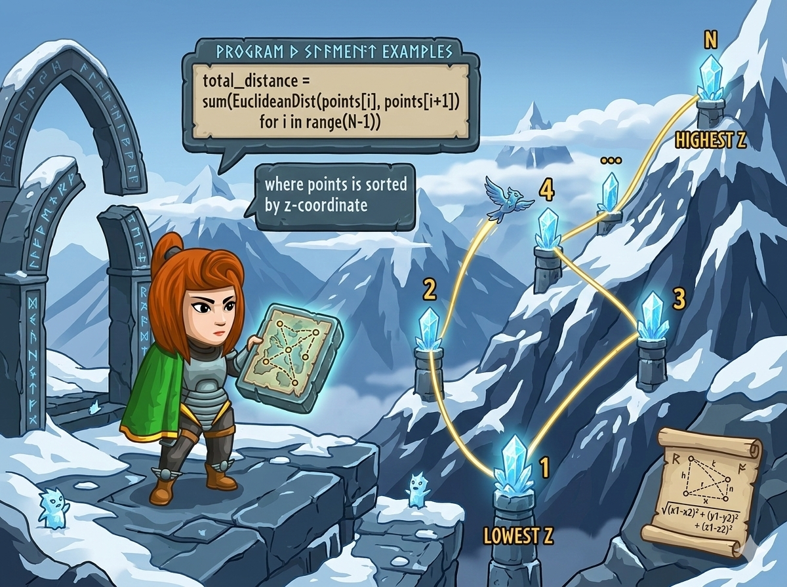

地图上有 N 个“雪晶坐标”，每个点都有自己的三维位置 (x, y, z)。其中 z 代表高度，每个点的高度都不一样哦！

飞行规则：
你的任务： 帮 HKE 算出总飞行距离，并保留 三位小数。
这是一场高空接力赛！要算出总路程，我们要分两步走：
🥇 第一步：整理航线 (排序)。因为必须从低到高飞，所以我们要把所有的点按照高度 z 从小到大排好队！
🥈 第二步：计算距离 (欧几里得公式)。在立体的三维世界里，两颗星星之间的距离怎么算呢？
🌟 三维直线距离魔法公式 🌟
$$ \text{距离} = \sqrt{(x_2-x_1)^2 + (y_2-y_1)^2 + (z_2-z_1)^2} $$struct Point： 以前我们的背包只能装一个数，现在我们需要一个背包同时装下 x, y, z 三个坐标！compareZ： 电脑不知道什么是“按高度排队”，我们需要写一个小裁判函数，告诉它：“比 z 的大小，z 小的站前面！”sqrt()： 在 <cmath> 工具箱里，这个魔法可以算出平方根。fixed << setprecision(3)： 放在 cout 里面，可以让输出的数字乖乖地保留 3 位小数。#include <iostream> #include <vector> #include <algorithm> #include <iomanip> // ✂️ 小数点裁切工具箱 #include <cmath> // 📏 开方魔法工具箱 using namespace std; // 🎒 制作“坐标点”专属超级背包 struct Point { int x, y, z; }; // 🧑⚖️ 裁判函数：告诉电脑，谁的 z 小谁就排前面 bool compareZ(const Point &a, const Point &b) { return a.z < b.z; } int main() { // ⚡ 加速咒语 ios::sync_with_stdio(false); cin.tie(nullptr); int N; cin >> N; // 🖥️ 电脑问：有多少个坐标点？ vector<Point> points(N); for (int i = 0; i < N; ++i) { cin >> points[i].x >> points[i].y >> points[i].z; } // 🪄 开始排队啦！用我们自己写的 compareZ 当规则 sort(points.begin(), points.end(), compareZ); double total = 0.0; // 📏 准备一个带小数点的计步器，初始为 0 // ✈️ 开始飞行！从第 2 个点 (下标1) 开始，每次和前一个点算距离 for (int i = 1; i < N; ++i) { // 算出 x, y, z 各自的差距 (用 long long 防爆) long long dx = points[i].x - points[i-1].x; long long dy = points[i].y - points[i-1].y; long long dz = points[i].z - points[i-1].z; // 🌟 三维距离魔法公式：平方相加再开方！ total += sqrt(dx*dx + dy*dy + dz*dz); } // 🎉 输出结果，固定保留 3 位小数！ cout << fixed << setprecision(3) << total << '\n'; return 0; }
(dx*dx + dy*dy + dz*dz)。这其实是勾股定理在三维世界的升级版哦！dx 要用 long long？ 坐标最大可能非常大，比如 10000。如果直接 dx * dx，在相加的时候可能会超出普通 int 能承受的极限爆炸掉！用 long long 绝对安全！